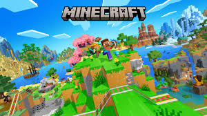

Minecraft é muito mais do que um fenômeno cultural, é o videogame mais vendido de todos os tempos e uma plataforma de criatividade sem precedentes. Definido tecnicamente como um jogo de sandbox, com elementos de sobrevivência, ele oferece aos jogadores um mundo infinito gerado procedimentalmente, composto inteiramente por blocos cúbicos que representam diferentes materiais, como terra, pedra, minérios, água e madeira.
A jornada de Minecraft começou em maio de 2009, criado pelo desenvolvedor sueco Markus "Notch" Persson, Em 2010, Notch fundou a Mojang Studios para focar no desenvolvimento contínuo do jogo. O lançamento oficial da versão 1.0 ocorreu apenas em 18 de novembro de 2011, em setembro de 2014, a Microsoft adquiriu a Mojang e a propriedade intelectual de Minecraft por 2,5 bilhões de dólares. Sob a nova gestão, o jogo expandiu seu alcance educacional e tecnológico, mantendo atualizações gratuitas e constantes que adicionam novos biomas, criaturas e mecânicas até hoje.
Para garantir que o jogo estivesse acessível a todos, o jogo foi ramificado em duas bases de código principais:
Minecraft Java Edition: A versão original para PC (Windows, macOS e Linux). É a preferida dos players e de criadores de conteúdo devido à facilidade de instalação de mods e servidores personalizados.
Minecraft Bedrock Edition: desenvolvida em C++, esta versão unificou o jogo em múltiplas plataformas, permitindo jogar entre diferentes aparelhos. Está disponível para consoles, dispositivos móveis e computadores.

A jogabilidade no Minecraft é um ciclo de liberdade criativa e sobrevivência estratégica, onde o jogador é inserido em um mundo infinito gerado procedimentalmente e composto por blocos. No jogo há uma interação direta com o ambiente através da mineração e da coleta de recursos, quase todos os elementos do cenário podem ser destruídos e armazenados no inventário para usar. Essa progressão é hierarquica, onde ferramentas simples de madeira permitem você pegar pedras, que por sua vez possibilitam a fundição de metais como o ferro, e depois na obtenção de diamantes e por ultimo a netherite que é o material mais forte do jogo, esse sistema de progressão não serve apenas para a sobrevivência, mas alimenta a mecânica de construção, permitindo que os jogadores moldem o terreno para erguer desde casas simples até megacidades.

Além da construção física, o jogo introduz camadas de mecânicas de RPG e simulação, No modo sobrevivência, o jogador deve gerenciar sistemas como a barra de fome e de saúde, o que impulsiona atividades de agricultura e pecuária para garantir a sobrevivencia. A evolução do personagem ocorre através da coleta de esferas de experiência (XP), utilizadas para encantar equipamentos com propriedades mágicas ou para preparar poções alquímicas que concedem habilidades especiais, como resistência ao fogo ou invisibilidade. Um dos diferenciais mais técnologicos da gameplay é a Redstone, um mineral que funciona como condutor de energia e permite a criação de circuitos eletricos. Com a Redstone, a jogabilidade permite que jogadores avançados construam sistemas de automação industrial, computadores funcionais e fazendas automáticas que coletam recursos sem intervenção humana.

O desafio do mundo é intensificado pelo ciclo de dia e noite e pela presença dos "mobs", entidades móveis que povoam as dimensões. Durante o dia, o ambiente é dominado por animais passificos, mas a queda da luz permite o surgimento de criaturas hostis, como os creepers, esqueletos e zumbis, forçando o jogador a dominar táticas de combate e defesa. Essa jornada de exploração se expande para dimensões alternativas: o Nether, um submundo hostil e rico em recursos vulcânicos, e o End, uma dimensão de vazio absoluto que abriga o Ender Dragon, o chefe final do jogo. A vitória sobre o dragão não encerra a experiência, mas desbloqueia a exploração das Cidades do End e o acesso às Élitras, asas que permitem o voo e transformam radicalmente a navegação pelo mapa. No fim, a gameplay de Minecraft é definida pela ausência de um fim obrigatório, funcionando como uma plataforma onde a curiosidade técnica e a expressão artística do jogador determinam o ritmo e o objetivo da aventura.


A liberdade de movimento é outro pilar fundamental. No Modo Criativo, o jogador ganha a habilidade de voar, facilitando a visualização aérea de projetos e o alcance de áreas elevadas sem a necessidade de andaimes ou escadas. Somado a isso, o personagem torna-se invulnerável: não há barra de fome, dano por queda, afogamento ou ataques de criaturas hostis. Mesmo os monstros mais perigosos, como o Warden ou o Ender Dragon, ignoram a presença do jogador.
Para a maioria dos jogadores, a experiência começa com o impacto da exploração. Ao surgir em um mundo gerado procedimentalmente, o jogador sente uma curiosidade genuína, há uma dualidade tensa na experiência de Minecraft. Durante o dia, o jogo é um paraíso bucólico; à noite, ele se transforma em um teste de sobrevivência, a medida que o jogador evolui, a experiência deixa de ser sobre "sobreviver ao mundo" e passa a ser sobre "dominar o mundo", para muitos jovens e adultos, o mundo do Minecraft é um lugar de encontro onde se criam memórias compartilhadas e projetos coletivos que podem durar anos.